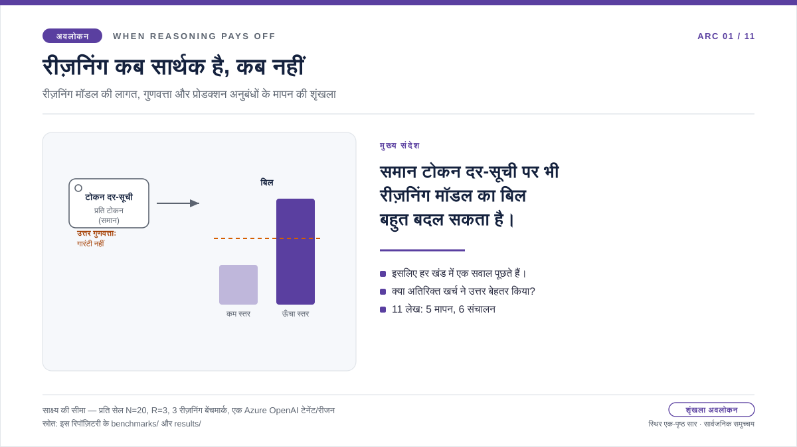

अवलोकन: रीज़निंग स्तर, गुणवत्ता और खर्च
रीज़निंग कब लागत को सार्थक बनाती है: समान टोकन दर, अलग बिल
एक टीम रीज़निंग मॉडल अपनाती है और पाती है कि प्रति-टोकन दर पहले जैसी ही है। लेकिन कॉन्फ़िगरेशन में एक नया नियंत्रण दिखता है: रीज़निंग स्तर। उसे बढ़ाना स्वाभाविक लगता है—अगर थोड़ा अधिक सोचना लगभग मुफ़्त हो, तो हर जगह उत्तर बेहतर क्यों न हों? फिर भी समान दर-सूची वाला रीज़निंग मॉडल बहुत अलग बिल बना सकता है। ऊँचे स्तर पर मॉडल के भीतर अधिक टोकन बनते हैं; उनका शुल्क लगता है, पर वे उत्तर में दिखाई नहीं देते। इसलिए असली सवाल यह नहीं कि “रीज़निंग महँगी है या नहीं,” बल्कि यह है कि “अतिरिक्त रीज़निंग कहाँ उत्तर सुधारती है और कहाँ केवल अदृश्य गणना बढ़ाती है?” यह शृंखला उसी प्रश्न को डेटा से जाँचती है।
हमने इस सहज धारणा को क्यों परखा
रीज़निंग मॉडल पर माइग्रेशन के बाद कॉन्फ़िगरेशन में रीज़निंग स्तर दिखता है, जबकि टोकन दर बदली हुई नहीं लगती। ऐसे में स्तर बढ़ाना गलत उत्तरों के विरुद्ध सस्ता बीमा प्रतीत होता है। यह धारणा उचित है, लेकिन इससे पता नहीं चलता कि अतिरिक्त गणना उत्तर सुधारती है या केवल बिल में जुड़ती है।
हर मापन-खंड में परिकल्पना सीधी है: क्या ऊँचा रीज़निंग स्तर उत्तर बेहतर करता है, या केवल अदृश्य टोकन, लेटेंसी और लागत बढ़ाता है? सहज धारणा पर चलने का अर्थ है ऊँचा डिफ़ॉल्ट भेजना और ऐसी गणना का भुगतान करना जो अंतिम आउटपुट को शायद बदले ही नहीं। पहले मापने का अर्थ है स्तर केवल वहाँ बढ़ाना जहाँ साथ का गुणवत्ता संकेत वास्तव में सुधरे, और अन्यत्र उसे कम रखना।
इसलिए हमने प्रॉम्प्ट और वर्कलोड खंड स्थिर रखे, फिर छोटे तथ्यात्मक उत्तर, बहु-चरणीय रीज़निंग और टूल-आधारित एजेंट पर समान स्तर क्रमशः लागू किए। टोकन संरचना, लेटेंसी और लागत का प्रत्यक्ष मापन किया गया, और मापी गई टोकन संरचना को PTU/PAYG क्षमता-योजना मॉडल में रखा गया। नतीजे खंड के अनुसार बदले। छोटे तथ्यात्मक काम में लागत, गुणवत्ता, लेटेंसी और रीज़निंग टोकन मूलतः सपाट रहे। बहु-चरणीय काम में गुणवत्ता का सुधार gpt-4o से gpt-5.2 के मॉडल परिवर्तन से आया, ऊँचे रीज़निंग स्तर से नहीं। टूल-आधारित एजेंट में गुणवत्ता प्रायः संतृप्ति की ऊपरी सीमा तक पहुँच गई। PTU/PAYG का प्रतिच्छेद प्रत्यक्ष क्षमता मापन नहीं, मॉडल-आधारित योजना सीमा है। नीचे के खंड इन निष्कर्षों को समझाते हैं; साक्ष्य डैशबोर्ड सभी संख्याओं का सत्यापन रिकॉर्ड है।

प्रश्न
ऊँचा रीज़निंग स्तर कहाँ मापने योग्य गुणवत्ता सुधार देता है और कहाँ केवल अदृश्य गणना बढ़ाता है?
साक्ष्य
सार्वजनिक चार्ट डेटा में लागत, मूल्यांकन स्कोर, टोकन संरचना, लेटेंसी और मॉडल-आधारित आरक्षित-क्षमता प्रतिच्छेद की तुलना की गई है।
निष्कर्ष
छोटे तथ्यात्मक खंड में सभी रीज़निंग स्तरों पर लागत मूलतः सपाट रही; gpt-5.2 का हर स्तर gpt-4o baseline से नीचे था। औसत मूल्यांकन स्कोर लगभग 1.95 रहा। बहु-चरणीय खंड में 1.5 से 2.0 का सुधार gpt-4o से gpt-5.2 के मॉडल परिवर्तन से आया।
निर्णय
रीज़निंग स्तर केवल वहाँ बढ़ाएँ जहाँ मूल्यांकन स्कोर सार्थक रूप से सुधरे। साक्ष्य डैशबोर्ड को लेख का सत्यापन रिकॉर्ड बनाए रखें।
पढ़ने का क्रम: तीन परतें और एक सेतु
शृंखला को तीन परतों में पढ़ें
अवलोकन: प्रश्न
यह लेख पूछता है कि अतिरिक्त रीज़निंग स्तर कब अपनी लागत को सार्थक बनाता है।
साक्ष्य: पाँच खंड
पाँच विषय-लेख हर वर्कलोड खंड की लागत, गुणवत्ता, लेटेंसी और टोकन संरचना मापते हैं।
सेतु: मापन → प्रोडक्शन
सेतु-लेख बताता है कि दृष्टिकोण क्यों बदलता है और मापन की कौन-सी सत्यापन पद्धतियाँ संचालन तक जाती हैं।
संचालन: प्रोडक्शन नीति
चार लेख उन्हीं सत्यापन सिद्धांतों को रिकवरी, कैश रूटिंग, रिटेंशन और माइग्रेशन साइज़िंग पर लागू करते हैं।
पढ़ने का नियम: बार, अक्ष और तालिका
चार्ट कैसे पढ़ें
इस लेख के छोटे बार-चित्र पूरे स्रोत चार्ट पढ़ने के मार्गदर्शक हैं, आवृत्ति वितरण दिखाने वाले हिस्टोग्राम नहीं। हर बार एक रीज़निंग स्तर—baseline, none, low, medium, high या xhigh—का समेकित मापन है।
X-अक्ष
X-अक्ष वह रीज़निंग स्तर है जिसे संचालक बदल सकता है। बाएँ से दाएँ जाने पर मॉडल को अधिक आंतरिक रीज़निंग की अनुमति मिलती है।
Y-अक्ष
माप चार्ट के अनुसार बदलता है: लागत के लिए प्रति-अनुरोध USD, गुणवत्ता के लिए मूल्यांकन स्कोर, लेटेंसी के लिए मिलीसेकंड, संरचना के लिए टोकन संख्या और प्रतिच्छेद के लिए मॉडल-आधारित अनुरोध प्रति मिनट।
बार
ऊँचा बार हमेशा बेहतर नहीं होता। गुणवत्ता में ऊँचाई लाभ हो सकती है; लागत, लेटेंसी या रीज़निंग टोकन बढ़ें तो उसके अनुरूप गुणवत्ता सुधार भी चाहिए।
स्रोत तालिका
सटीक मान, मानक विचलन और नमूना संख्या डैशबोर्ड की तालिका में देखें। यहाँ केवल निर्णय के लिए आवश्यक प्रवृत्ति दी गई है।
विषय: छोटे तथ्यात्मक जवाब
छोटे तथ्यात्मक काम: जब रीज़निंग लागत को सार्थक नहीं बनाती
results/cost-curves/benchmark-01-cost-per-request.csv से हैं।
साथ का गुणवत्ता चार्ट और सटीक तालिका
साक्ष्य डैशबोर्ड में उपलब्ध हैं
(स्थानीय चार्ट डेटा)।

इस बार-चार्ट को कैसे पढ़ें
X-अक्ष रीज़निंग स्तर है। लागत चार्ट का Y-अक्ष प्रति-अनुरोध औसत USD और साथ के गुणवत्ता चार्ट का Y-अक्ष औसत मूल्यांकन स्कोर है। सवाल सीधा है: क्या अधिक खर्च से स्कोर बढ़ा, या केवल बिल?
जाँचने का कारण
यह माइग्रेशन की सामान्य भूल जाँचता है: वर्कलोड में अधिकांश उत्तर छोटे और तथ्यात्मक हों, फिर भी टीम पूरे सिस्टम का रीज़निंग स्तर बढ़ा दे।
चार्ट क्या दिखाता है
none की औसत प्रति-अनुरोध लागत $0.000587 और xhigh की $0.000598 थी—केवल 1.02x का, मूलतः सपाट अंतर। दोनों gpt-4o baseline $0.000665 से नीचे थे। औसत मूल्यांकन स्कोर लगभग 1.95 रहा, जो baseline 1.90 के बराबर या बेहतर है। लेटेंसी 1409.90–1713.32 ms के बीच बिना क्रमिक बढ़त के रही।
संचालन का निष्कर्ष
छोटे तथ्यात्मक काम में सबसे कम रीज़निंग स्तर से शुरू करें। स्तर तभी बढ़ाएँ जब गुणवत्ता जाँच प्रत्यक्ष सुधार दिखाए।
विषय: अदृश्य शुल्क संरचना
बिल का अंतर समझाने वाले रीज़निंग टोकन
जाँचने का कारण
उत्तर लगभग वैसा ही दिख सकता है, जबकि मॉडल ने उसे बनाने में बहुत से आंतरिक रीज़निंग टोकन खर्च किए हों। केवल आउटपुट की लंबाई देखने पर शुल्क योग्य यह काम छूट जाता है।
चार्ट क्या दिखाता है
benchmark-01 के छोटे तथ्यात्मक खंड में रीज़निंग टोकन सभी स्तरों पर लगभग शून्य हैं: none पर 0, high पर अधिकतम 1.35 और xhigh पर लगभग 0.62। इसलिए बिल मूलतः सपाट रहता है। अदृश्य वृद्धि बहु-चरणीय खंड में दिखती है, जहाँ रीज़निंग टोकन स्तर के साथ बढ़ते हैं और उत्तर में न दिखने वाला लागत अंतर बनाते हैं।
संचालन का निष्कर्ष
उत्तर का पाठ यह अंतर नहीं बताता। प्रोडक्शन बजट में उपयोग को इनपुट, कैश इनपुट, आउटपुट और रीज़निंग टोकन में अलग करके देखें।
विषय: बहु-चरणीय रीज़निंग
बहु-चरणीय काम: मॉडल बदलने से गुणवत्ता सुधरी
विपरीत उदाहरण क्यों
पूर्व-पंजीकृत अनुमान था कि बहु-चरणीय वर्कलोड में ऊँचा रीज़निंग स्तर गुणवत्ता बढ़ाएगा। परिणाम ने इसे पलट दिया: सुधार gpt-4o से gpt-5.2 मॉडल अपनाने पर आया; gpt-5.2 के भीतर स्तर बढ़ाने पर अतिरिक्त सुधार नहीं हुआ।
चार्ट क्या दिखाता है
बहु-चरणीय खंड में gpt-4o baseline का मूल्यांकन स्कोर 1.5 था। gpt-5.2 none ने $0.000618 प्रति अनुरोध पर ही 2.0 हासिल किया; high भी 2.0 था, पर उसकी लागत $0.00125 थी। समान सर्वोच्च स्कोर none ने कम लागत पर दिया।
संचालन का निष्कर्ष
मॉडल और रीज़निंग स्तर के हर संयोजन की गुणवत्ता पहले जाँचें। गुणवत्ता समान हो तो सबसे कम लागत और लेटेंसी वाला संयोजन चुनें।
विषय: टूल-आधारित एजेंट
टूल एजेंट: गुणवत्ता की संतृप्ति पहचानें
संतृप्ति क्यों जाँचें
टूल एजेंट को देखकर लग सकता है कि उसे अधिक सोचना चाहिए, लेकिन कठिन भाग कई बार टूल कॉल पहले ही संभाल रहा होता है।
चार्ट क्या दिखाता है
benchmark-03 के टूल-एजेंट खंड में मूल्यांकन मॉडल का स्कोर रूब्रिक की ऊपरी सीमा पर पहुँच चुका है। स्तर बढ़ाने पर स्कोर नहीं बढ़ता; मुख्यतः आंतरिक टोकन और लेटेंसी बढ़ते हैं। यहाँ रीज़निंग गुणवत्ता अब सीमा तय करने वाली बाधा नहीं है।
संचालन का निष्कर्ष
रीज़निंग स्तर को डिफ़ॉल्ट नहीं, नियंत्रित प्रयोग मानें। एजेंट-आधारित वर्कलोड में पहले तय करें कि बाधा रीज़निंग गुणवत्ता, टूल चयन, टूल लेटेंसी या ऑर्केस्ट्रेशन में कहाँ है।
विषय: क्षमता-योजना
PTU/PAYG प्रतिच्छेद: प्रत्यक्ष मापन नहीं, योजना मॉडल
योजना में क्यों आवश्यक
PAYG और आरक्षित क्षमता के निर्णय अलग आधार पर होते हैं। यह चार्ट रीज़निंग सहित टोकन संरचना को योजना सीमा में बदलता है।
चार्ट क्या दिखाता है
छोटे तथ्यात्मक xhigh पंक्ति में PTU/PAYG प्रतिच्छेद 50 PTU की न्यूनतम सीमा पर लगभग 2748 rpm का मॉडल-आधारित अनुमान है। यह प्रत्यक्ष PTU थ्रूपुट मापन नहीं है।
संचालन का निष्कर्ष
इस संख्या को क्षमता साक्ष्य नहीं, योजना सीमा मानें। PAYG में रीज़निंग टोकन घटाने से परिवर्ती खर्च घटता है। PTU में वही कटौती स्थिर आरक्षण के भीतर अधिक अनुरोधों की गुंजाइश दे सकती है।
सेतु: मापन से संचालन तक
मापन से प्रोडक्शन तक
मापन-लेखों ने जाँचा कि ऊँचा रीज़निंग स्तर कहाँ गुणवत्ता सुधारता है और कहाँ केवल अदृश्य गणना बढ़ाता है। संचालन-लेखों का प्रश्न अलग है: स्तर तय होने और ट्रैफ़िक चलने के बाद डिप्लॉयमेंट संचालक को क्या लौटाए? सेतु-लेख बताता है कि मापन से संचालन तक दृष्टिकोण क्यों बदलता है और कौन-सी सत्यापन पद्धतियाँ साथ चलती हैं।
संचालन: प्रोडक्शन परत
सत्यापन पद्धति को संचालन तक ले जाएँ
यह अवलोकन बताता है कि रीज़निंग स्तर कब लागत और गुणवत्ता बदलता है। संचालन-लेख
उसी सत्यापन पद्धति को व्यावहारिक विषयों पर लागू करते हैं:
retry-after-ms के अनुसार 429 रिकवरी,
prompt_cache_key बकेटिंग, स्पष्ट कैश रिटेंशन और GPT-4o से
GPT-5.x माइग्रेशन साइज़िंग।
हर लेख सार्वजनिक चार्ट साक्ष्य और आधिकारिक विनिर्देश उद्धृत करता है, और दस्तावेज़ीकृत व्यवहार तथा संचालन संबंधी अनुमान के बीच की सीमा स्पष्ट करता है।
429 रिकवरी लेख पढ़ें कैश-कुंजी लेख पढ़ें कैश रिटेंशन लेख पढ़ें माइग्रेशन साइज़िंग लेख पढ़ें सभी लेख देखें
स्रोत: साक्ष्य की सीमा
स्रोत और साक्ष्य की सीमा
यह अवलोकन पाँच खंडों में लागत, गुणवत्ता, लेटेंसी और टोकन संरचना साथ पढ़ता है। ऊपर की हर संख्या इस रिपॉज़िटरी के सार्वजनिक आर्टिफ़ैक्ट तक खोजी जा सकती है; संचालन संबंधी व्याख्या इस लेख की है। नीचे के दो स्तर दस्तावेज़ीकृत अनुबंध और संचालन संबंधी अनुमान के बीच की सीमा दिखाते हैं।
- [1] स्तर 1: कार्यपद्धति अनुबंध: यह रिपॉज़िटरी,
docs/05-methodology.md(v1.0)। प्रति सेल N = 20 लिखित नमूने, R = 3 दोहराव और केवल सार्वजनिक समेकित खंड। चार्ट की व्याख्या इन्हीं स्थिर शर्तों पर आधारित है; N = 20 पर p-value का दावा नहीं किया गया है। - [2] स्तर 1: PAYG मूल्य स्नैपशॉट: PAYG लागत (प्रति-अनुरोध औसत USD) इस रिपॉज़िटरी के
pricing/azure-openai-payg-2026-05.yamlसे गणना की गई है। स्रोत: Azure OpenAI मूल्य पृष्ठ (2026-05-19 को देखा गया), आर्काइव। सूची मूल्य बदलने पर अनुपात भी बदलेंगे। - [3] स्तर 1: PTU मूल्य स्नैपशॉट: मॉडल-आधारित PTU प्रतिच्छेद और 50 PTU की न्यूनतम सीमा इस रिपॉज़िटरी के
pricing/azure-openai-ptu-2026-05.yamlमें दर्ज मानों का उपयोग करते हैं। स्रोत: Microsoft Learn दस्तावेज़ (2026-05-19 को देखा गया), आर्काइव। कीमत 1 PTU-hour (1 PTU के एक घंटे) के लिए है। यह दर या PAYG टोकन दर बदलने पर प्रतिच्छेद भी बदलेगा। - [4] स्तर 2: छोटे तथ्यात्मक खंड का प्रत्यक्ष मापन: यह रिपॉज़िटरी,
benchmarks/01-short-factual/analysis.json। प्रति-अनुरोध लागत $0.000587 से $0.000598 तक मूलतः सपाट है और सभी gpt-5.2 स्तर gpt-4o baseline $0.000665 से नीचे हैं। औसत मूल्यांकन स्कोर gpt-4o के 1.9 के सामने gpt-5.2 none का 1.95 है। रीज़निंग टोकन none पर 0.0, high पर अधिकतम 1.35 और xhigh पर लगभग 0.62 हैं। लेटेंसी में स्तर के साथ क्रमिक वृद्धि नहीं है। - [5] स्तर 2: बहु-चरणीय खंड का प्रत्यक्ष मापन: यह रिपॉज़िटरी,
benchmarks/02-multi-step-reasoning/analysis.json। gpt-4o baseline के 1.5, gpt-5.2 none के 2.0 ($0.000618 प्रति अनुरोध) और high के 2.0 ($0.00125) का स्रोत। - [6] स्तर 2: टूल-एजेंट खंड का प्रत्यक्ष मापन: यह रिपॉज़िटरी,
benchmarks/03-tool-using-agent/analysis.json। टूल-एजेंट खंड में दिखाए गए गुणवत्ता-संतृप्ति बार का स्रोत। - [7] स्तर 2: मॉडल-आधारित प्रतिच्छेद: छोटे तथ्यात्मक xhigh पंक्ति के लिए 50 PTU की न्यूनतम सीमा पर लगभग 2748 rpm, प्रत्यक्ष मापन वाली टोकन संरचना पर आधारित योजना गणना है; यह प्रत्यक्ष PTU थ्रूपुट परिणाम नहीं है। इसे क्षमता साक्ष्य नहीं, साइज़िंग मार्गदर्शन मानें। मॉडल आर्टिफ़ैक्ट:
docs/blog/data/chart-data/ptu-payg-crossover/benchmark-01/crossover.json। - [8] साक्ष्य डैशबोर्ड: साक्ष्य डैशबोर्ड की लेख-वार तालिकाएँ और रेंडर किए गए स्रोत चार्ट उन्हीं आर्टिफ़ैक्ट का सत्यापन योग्य रूप हैं।
यह अवलोकन केवल इस बेंचमार्क नमूने के पाँच खंडों की प्रवृत्ति दिखाता है। इससे यह सिद्ध नहीं होता कि दूसरे वर्कलोड मिश्रण, टेनेंट, रीजन या भावी मूल्य स्नैपशॉट में भी वही प्रवृत्ति रहेगी। हर विषय-लेख अपने खंड की सीमा बताता है।
साक्ष्य से क्या कहा जा सकता है
इस अवलोकन ने पाँच खंडों में मॉडल और रीज़निंग स्तर के संयोजन से लागत, गुणवत्ता, लेटेंसी और टोकन संरचना में आए बदलाव साथ देखे। अतिरिक्त खर्च तभी उपयोगी है जब उत्तर वास्तव में सुधरे।
व्यावहारिक नियम
- छोटे तथ्यात्मक उत्तरों में कम रीज़निंग स्तर को डिफ़ॉल्ट रखें।
- बहु-चरणीय काम में मॉडल और रीज़निंग स्तर के संयोजन जाँचें; गुणवत्ता समान हो तो सबसे कम लागत वाला संयोजन चुनें।
- टूल एजेंट में स्तर बढ़ाने से पहले गुणवत्ता की संतृप्ति जाँचें।
- हर लागत दावे को साथ के गुणवत्ता, लेटेंसी और टोकन चार्ट के साथ पढ़ें।
व्यावहारिक नियम: इस वर्कलोड में रीज़निंग स्तर केवल वहाँ बढ़ाएँ जहाँ प्रत्यक्ष मापन में मूल्यांकन स्कोर सुधरे। प्रोडक्शन में लागू करने से पहले हर लागत दावे को साथ के गुणवत्ता, लेटेंसी और टोकन चार्ट के साथ पढ़ें।
साक्ष्य डैशबोर्ड इस नियम का सत्यापन रिकॉर्ड है; विषय-लेख हर खंड में इसका प्रयोग दिखाते हैं।